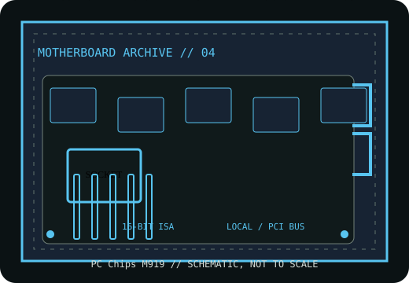

[ HISTORICAL SYSTEM BOARD // IDENTIFIED MODEL ]
PC Chips M919
1994–1995 Socket 3 PCI 486 motherboard. This record distinguishes the exact model from related variants and requires revision-matched documentation for service.

IDENTIFY THE PCB: Record model suffix, board revision, chipset markings, BIOS label and date codes before applying any family-level compatibility information.
Model specifications
| Exact model | PC Chips M919 |
|---|---|
| Generation / chipset | 1994–1995 Socket 3 486 motherboard; use the exact M919 manual and PCB markings to identify chipset and revision. |
| CPU socket / processor | Socket 3; the archived M919-style manual lists 80486 SX/DX/DX2/DX4, Intel P24D/P24T and 5x86 processors over a board-specific 25–133 MHz range. Verify voltage and clock settings against the PCB revision. |
| RAM technology / capacity | 30-pin SIMM ×4 or 72-pin SIMM ×2 per the archived M919-style manual; configurations up to 128 MB are listed. Follow its bank and module-population rules. |
| Form factor | Baby AT. |
| Bus, slots & I/O | Three PCI Local Bus slots, four 16-bit ISA slots, VESA Local Bus support, IDE, floppy and multi-I/O including serial/parallel as listed by the archived manual. Confirm fitted ports and revision. |
| Jumpers / BIOS compatibility | The manual documents CPU-type, voltage and clock jumpers (including JP3–JP14) and a system BIOS; use the M919-specific chart and matching ROM, not a generic AMI/Award image. |
Jumper, BIOS & compatibility notes
M919 has multiple PCB revisions and known component/feature variation. Identify the version silkscreen and chipset; verify the manual's VESA Local Bus and cache descriptions against fitted parts.
The archived manual identifies separate CPU type, voltage and clock jumpers; matching socket geometry alone does not establish CPU, memory or firmware compatibility.
Safety & preservation
Protect from ESD, verify battery type and inspect for leakage. Record jumper and SIMM layout before service; check socket, cache sockets and capacitors. AT P8/P9 power plugs must have their black wires at the center.
Preserve provenance, original labels, jumpers and test conditions. Photograph the board before repair; avoid aggressive cleaning or desoldering until corrosion and component risks are documented.
Manufacturer and archive manuals
- PC Chips M919-style 486 VIP manual scan — Internet ArchiveScanned manual with CPU, SIMM, PCI/ISA/VESA bus, I/O and jumper tables; verify its board/version diagrams against the PCB.
- PC Chips M919 manual archive record — Internet ArchiveArchive item metadata and alternative OCR/text formats for the same preserved manual.
- PC Chips M919 board documentation — The Retro WebModel archive for M919 variants, photographs and linked documentation.
Archived copies may cover another board revision. Compare manual diagrams and revision identifiers with the physical PCB; do not flash firmware or set voltage jumpers from a related model's manual.